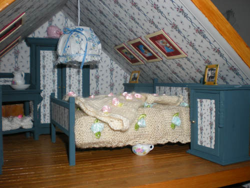

En de kleine knusse slaapkamer
De meubeltjes heb ik wederom gemaakt van sigarenkistjes en daarna
beplakt met behang papier wat ik van het internet heb gedownload.
Beddegoed en handdoekjes zijn gebreid..
De lijstjes zijn van karton beplakt met decoratiepapier..
